2010 10 16 苗栗 國立聯合大學 語言文化分佈與族群遷徙工作坊會場
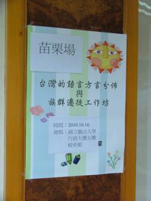 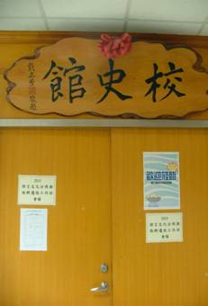
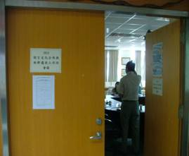 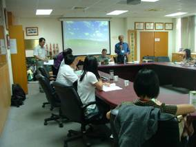
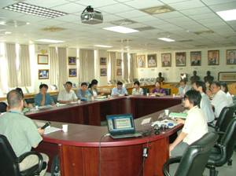 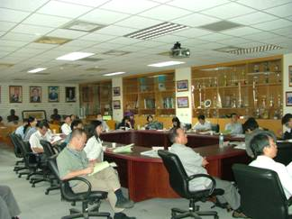
工作坊主席 國立台中教育大學台語系
上半場主持人 日本愛媛大學法文學部
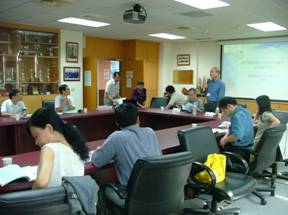 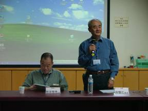
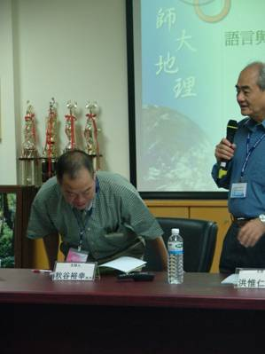 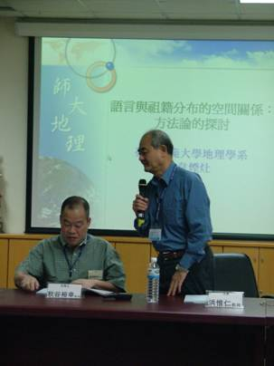 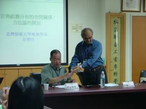 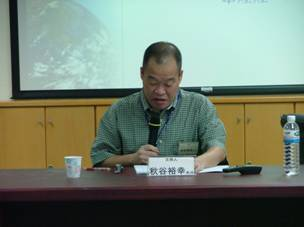
發表人01 國立台灣師範大學地理系 韋煙灶老師
討論人01 國立東華大學台灣文化學系
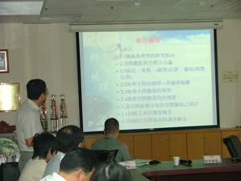
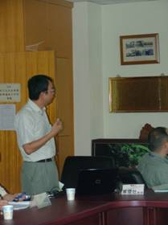 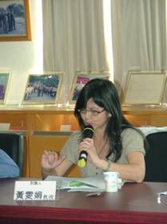 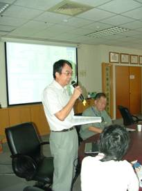
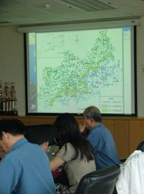 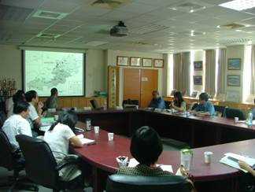
發表人02 國立台中教育大學區域與社會發展學系
討論人02 國立成功大學歷史學系
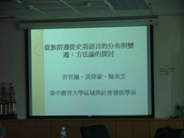 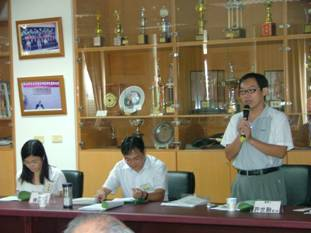
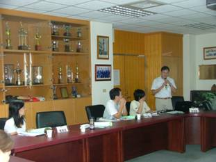 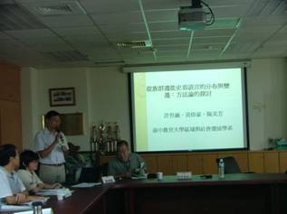
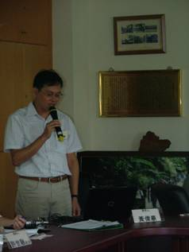 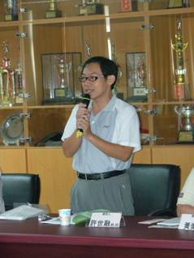 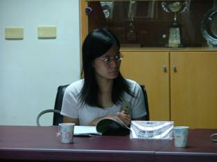 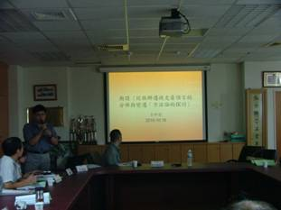
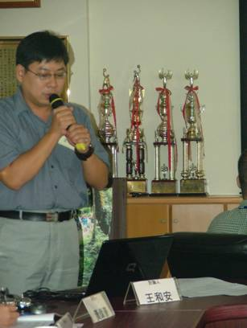 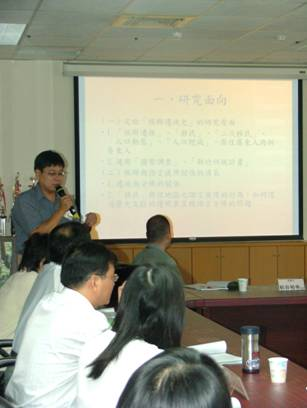
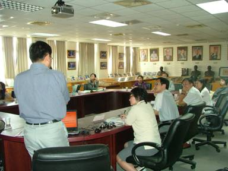
下半場主持人 國立台灣師範大學地理系
發表人03 國立新竹教育大學台語所 涂
討論人03 國立中央大學客語所
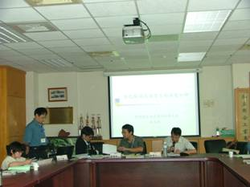 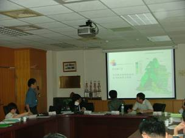
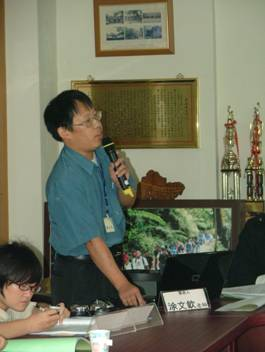 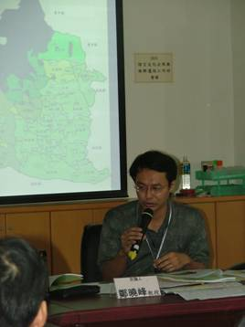
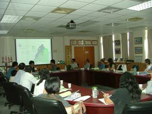 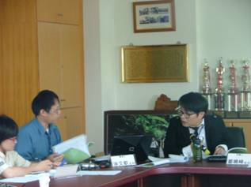
發表人04 國立中央大學客語所
討論人04 廈門大學人文學院中文系
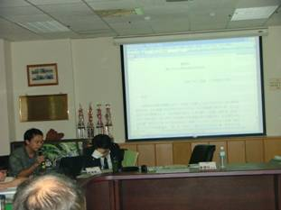 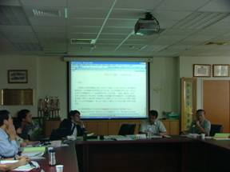
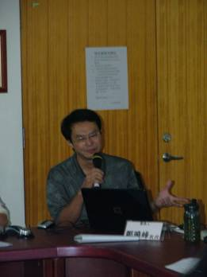 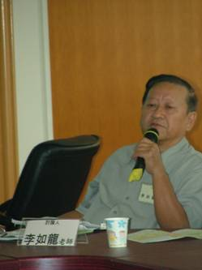
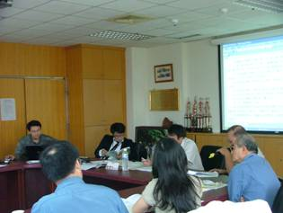 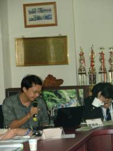
發表人05 國立台中教育大學台語系
討論人05 日本愛媛大學法文學部
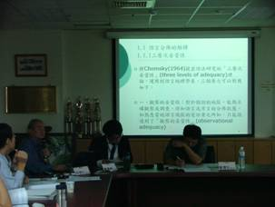 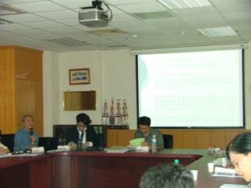
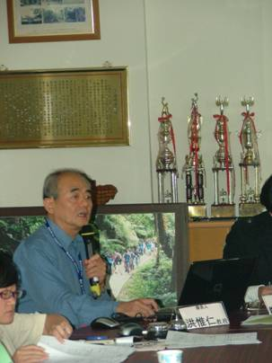 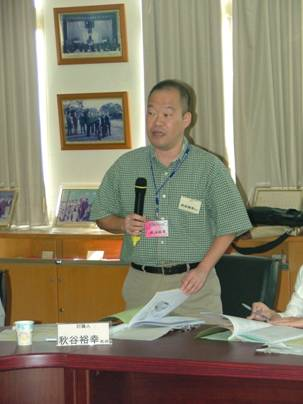
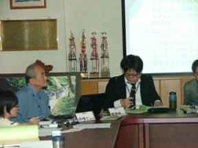 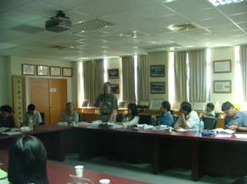
綜合討論 主席 國立台中教育大學台語系
與會學者意見交流
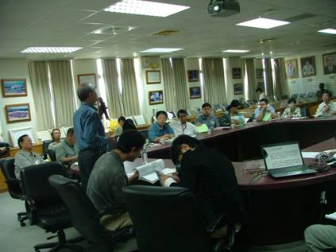 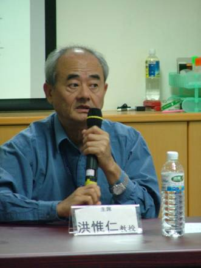
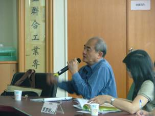